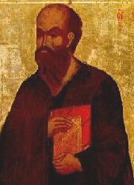
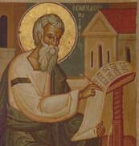
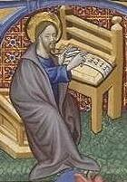

“Una señal inequívoca del amor a la verdad, es no mantener ninguna proposición con mayor seguridad de la que garantizan las pruebas en las que se basa.”
—John Locke, Filósofo inglés (1632-1704)
¿Quién dudaría de la historicidad de Jesús de Nazareth? Contamos los años en “antes y después de Cristo”. Tantas personas creen que existió, de la misma manera que un héroe de la independencia, que se conmemoran las fecha de su nacimiento y su muerte. Sin embargo, sería prudente preguntamos: ¿Qué evidencias hay sobre la existencia de Jesús de Nazareth?
Si revisamos detalladamente, tendríamos que decir que no tenemos absolutamente ninguna prueba confiable, de fuentes seculares (no religiosas), que Jesús haya vivido, por lo menos de la forma descrita en la Biblia.
Esta respuesta elevará más de un par de cejas, a la vez que nuestros amigos católicos y protestantes nos dirán que la existencia de Jesús es tan indiscutible, que dividió la historia en “antes y después de Cristo”. Sin embargo, cabe mencionar que el sistema “antes y después de Cristo” no se inventó hasta el siglo VI y no se aceptó de manera general en Europa hasta el siglo XI. Nuestro sistema de contar los años en a. C y d. C lo debemos al monje Dionysius Exigius (o Dionisio el exiguo), quien por orden del Papa Juan I elaboró una cronología fijando el nacimiento de Jesús en el año 753 A. U. C.(ad urbe condita) o año 753 desde la fundación de Roma. El año 1 de la era cristiana fue fijado por Dionisio en el 1 de enero del 754 A.U.C. En tiempos más recientes los historiadores prefieren utilizar las siglas A.E.C.(antes de la era común) y D.E.C.(después de la era común), por respeto a la diversidad cultural del mundo.
Los científicos fijan los eventos prehistóricos en “años antes del presente” BP (Before present). Por ejemplo, las pinturas rupestres de la Era glacial en la cueva de Altamira están fechadas en 17.000 años antes del presente. Utilizar en este caso el sistema “antes de Cristo” es una adjudicación culturalmente abusiva. ¿Les importaría en algo a esos cavernícolas el futuro nacimiento de un líder religioso?
Dionisio elaboró su sistema de contar los años, tomando como históricamente válidas las narraciones de los evangelios, las cuales analizaremos más adelante. Dionisio creía firmemente que Jesús nació el 25 de diciembre, ignorando el origen de esta costumbre. En realidad La Iglesia Católica empezó a celebrar navidad desde el siglo IV. La Enciclopedia de la Religión Católica, Tomo V dice al respecto:
“La razón que llevó la Iglesia Romana a fijar la festividad en ese día, parece ser su tendencia a suplantar las festividades paganas por otras cristianas. De este modo se originaron muchas de las actuales fiestas litúrgicas. Ahora bien sabemos que entonces en Roma los paganos consagraban el día 25 de diciembre en celebrar el Natalis invicti, el nacimiento del Sol Invencible, que después del solsticio, se engrandecía en fuerza y claridad. Símbolo del Sol era Mitra, divinidad oriental, cuyo culto había sido introducido en Roma en 274. De este modo, para hacer ocurrencia a la fiesta pagana consagrada al nacimiento del Sol natural (Mitra), la Iglesia comenzó celebrando este Sol novus…”
Muchos investigadores han llegado a la conclusión que el Jesús que conocemos por el Nuevo Testamento resultó de una creación mitológica del primer siglo. Los investigadores han aplicado el Principio de Evidencia Negativa para llegar a tales conclusiones.
El Principio de Evidencia Negativa dice que no tenemos una buena razón para acreditar una proposición sí los siguientes tres principios se satisfacen:
Si todas las pruebas o evidencias que corroboran una proposición son de poca confianza.
No existe ninguna evidencia comprobando la proposición, cuando esta debería estar presente si la proposición fuese verdadera.
Si se ha realizado una búsqueda minuciosa y exhaustiva tras las evidencias corroborativas en el lugar apropiado.
El primer punto del Principio de Evidencia Negativa, nos pide “que las pruebas que corroboran una proposición sean poco seguras” Esto es justo lo que ocurre con la única evidencia secular sobre la vida de Jesús: los dos breves pasajes de las obras de un historiador del siglo I, llamado Flavio Josefo. Josefo era un prolífico escritor, no obstante, solo escribió dos párrafos sobre Jesús. Uno es notoriamente una interpolación, y el otro es altamente sospechoso. Otras referencias a Jesús en los escritos seculares son demasiado ambiguas, o son interpolaciones posteriores.
Este hecho es bastante curioso, ya que la Biblia dice que Jesús fue un fenómeno de masas y que tuvo repercusiones en los eventos sociales de Oriente medio. Esto es como si en un futuro lejano, sólo se encontraran dos breves pasajes sobre la existencia de un tal Nelson Mandela en los textos de historia de Sudáfrica y los diarios del siglo XX.
Al cuestionar a los creyentes sobre esto, ellos responden que se basan en sus sensaciones interiores, y es muy probable que tras enseñarles las incongruencias históricas de sus creencias ellos respondan: “Esto lo creo porque siento a Cristo en mi corazón”, o “Tú no puedes entender esto porque no has tenido esta experiencia de vida” o “Debes saber que Cristo cambió mi vida, y eso es suficiente para que yo crea”.
Sin embargo, estas razones son poco confiables, ya que las personas de todos los credos siempre han tenido sensaciones interiores, sea cual fuere la creencia que promulguen. Los cristianos nos dicen que ellos “siguen a Jesús”, pero es diferente ser seguidor de alguien a quien se puede ver y escuchar de primera mano, que seguir a unos religiosos que predican (e interpretan) unos textos escritos por unos fulanos, que escucharon hablar de un tal Jesús de Nazareth. ¡La diferencia entre estas dos situaciones es abismal!
En el siglo I, había la costumbre de escribir algo y atribuirlo a otra persona (a su mentor filosófico), tal actividad se conoce como “Pseudoepigrafía”. Esto dificultó a los estudiosos la verificación de quien realmente escribió los libros del Nuevo Testamento.
Los apologistas cristianos dicen que la pseudoepigrafía era una técnica común en las escuelas de la época, y que en tal época no se consideraba moralmente incorrecta. Sin embargo, el autor Karlheinz Deschner, en su “Historia criminal del cristianismo”, tomo 4 (falsificaciones y engaños), demuestra contundentemente que incluso en la antigüedad, esa práctica era reconocida como deshonesta y fraudulenta.
Los investigadores al aplicar ciertas técnicas, para determinar quién está hablando, cuál es su mensaje, el cuándo y el por qué, han concluido que los escritos más antiguos de los primeros cristianos son las cartas de San Pablo. Estas probablemente datan del comienzo de la quinta década del primer siglo - bien después de los eventos de la vida de Jesús. Además de esto, no todas las epístolas que se encuentran en la Biblia como obras de Pablo, son realmente suyas, sino como se mencionó anteriormente, algunas fueron escritas por otras personas, quienes las atribuyeron a Pablo.
Las cartas paulinas fueron escritas antes que los evangelios, y ninguno de estos es anterior a por lo menos la séptima década. Los textos aceptados genuinamente como obras de Pablo son (Gálatas, 1 de Tesalonicenses, 1 y 2 de Corintios, Romanos, Filemón, y Filipenses).
Al examinar las cartas paulinas genuinas de forma aislada, queda claro que Pablo no tenía ninguna idea del nacimiento virginal de Cristo, además nunca afirmó haber vivido en la época de Jesús, o que cualquiera de sus mentores era contemporáneo de Jesús, o que Jesús había hecho cualquier milagro. Pablo tampoco asoció la muerte de Jesús con el juicio ante Pilatos. Pablo nunca corroboró la existencia de un Jesús en la primera mitad del primer siglo. Al revisar otros escritos cristianos anteriores a los cuatro evangelios, ahora considerados como apócrifos (que no pertenecen a la Biblia), queda claro que estos omiten las mismas cosas que Pablo omite, lo que nos lleva a pensar que los hechos biográficos asociados a Jesús fueron inventados posteriormente.
La elaboración de los evangelios abarca el periodo del año 70 D.E.C hasta el 120 D.E.C. aprox. Es necesario mencionar que los evangelios fueron escritos después de la destrucción del templo de Jerusalén en el año 70 D.E.C. por orden del emperador Tito, dando fin a la rebelión judía contra el imperio romano. Este hecho es importante, ya que los predicadores fundamentalistas enseñan que Jesús profetizó la destrucción del templo, lo cual es completamente falso.

El primer evangelio escrito, de los cuatro presentes en la Biblia, fue el de Marcos. Su autor creía en supersticiones, demonios, posesiones por los mismos, y milagros. Todo esto afectó la escritura de su evangelio. El autor de Marcos no declara haber conocido a Jesús. Él probablemente escribió su evangelio en Siria (poco después de la destrucción de Jerusalén) para los romanos cristianos, que pasaban por la persecución de Nerón. Es así como Marcos escribió este evangelio probablemente para fortalecer a los perseguidos.
El evangelio de Marcos, no menciona a José en la historia del nacimiento de Jesús. El autor se refiere a Jesús como “hijo de Maria”, una descripción reservada a los hijos ilegítimos. En Marcos no hay detalles sobre el nacimiento de Jesús, no menciona nada sobre un nacimiento virginal, la visita de los reyes magos o de ángeles comentando el nacimiento con los pastores. La razón de esto, es que esos mitos aún no habían sido incluidos en la doctrina cristiana.
El segundo evangelio fue el de Mateo. El autor de Mateo estaba empeñado en mostrar a los hebreos que Jesús era el Mesías prometido. Cuando el autor de Mateo escribió su evangelio, tenía a su disposición la traducción griega del Antiguo Testamento conocida como “La Septuaginta” o “de los setenta”. En la septuaginta se tradujo mal un texto de Isaías que dice que en respuesta a una señal, una mujer joven (almah es el término hebreo) concebiría a un niño que habría de llamarse Emmanuel. La palabra utilizada en hebreo no significa “virgen”, pues en tal caso el vocablo correcto debió ser “betulah ”, esta palabra fue traducida al griego como “parthenos”, que significa virgen. Así ocurrió un cambio importante de significado y el autor de Mateo terminó afirmando que María era virgen cuando concibió a Jesús.
El autor de Mateo usó como fuente principal el evangelio de Marcos, por lo que incorporó los mitos de este evangelio, adicionó los suyos, y la historia fue alterada nuevamente. Para probar que Jesús era el Mesías, el autor de Mateo omite detalles en la genealogía de Jesús a fin de mostrar conjuntos de siete generaciones desde Abraham a David, de David hasta el exilio, y del exilio hasta Jesús. Las genealogías del evangelio de Mateo contradicen otras genealogías del Viejo Testamento.
También hay contradicciones entre los evangelios. En Mateo se menciona a Jesús como descendiente del rey David por parte de su hijo Salomón; mientras que en Lucas se afirma que Jesús proviene del rey de David, pero por parte de su hijo Natán. Según el evangelio de Mateo el abuelo paterno de Jesús (el padre de José) es Jacob; pero según Lucas el abuelo paterno de Jesús es Elí.
El Evangelio de Mateo fue un esfuerzo para convertir judíos, mientras que el Evangelio de Lucas lo fue para convertir gentiles (no judíos). El autor de Lucas también poseía una copia de Marcos, citó de ella varios pasajes y adicionó lo que le convenía.
El autor de Lucas escribió para un público romano lleno de posibles conversiones, por lo que Roma fue plasmada de la mejor manera posible. Por ejemplo, en el evangelio de Marcos los soldados romanos azotan a Jesús, pero en el evangelio de Lucas los soldados son de Herodes. El reino de Jesús “no es de este mundo”, obviamente un esfuerzo por aplacar las sospechas romanas de una conspiración cristiana contra el estado. Al ascender Domiciano al trono Romano en el año 81 D.E.C, la persecución se había reiniciado, por esto el autor de Lucas ve la necesidad de atenuar las preocupaciones romanas, mostrando el cristianismo como inofensivo. Por esto dedicó el documento a “Su excelencia Teófilo”.
El último de los 4 evangelios es el de Juan. Este evangelio fue escrito a comienzos del siglo II, y en éste, Jesús se muestra totalmente opuesto a los judíos.
Como vemos, cada evangelio fue escrito recogiendo información de segunda o tercera mano, después de haberse incorporado mucha mitología, y con fines misioneros precisos. Por esta razón, ninguno de los 4 evangelios es confiable en cuanto a la historicidad de Jesús.
La segunda exigencia del Principio de Evidencia Negativa es que “no exista ninguna evidencia segura donde ésta debería existir”, y esto es lo que ocurre, ya que no existe ningún registro de la vida de Jesús en los documentos romanos de la época, lo cual es sorprendente, ya que Jesús causó gran conmoción, según la Biblia.
El historiador Josefo era tan meticuloso que escribía una historia de tres páginas para cubrir el juicio y ejecución de un ladrón común. Flavio Josefo escribió exhaustivamente sobre Juan el Bautista, mas sobre Jesús, sólo aparecen dos pequeñas referencias altamente cuestionadas por los investigadores. Desafortunadamente, los escritos de Josefo llegaron hasta nosotros solamente a través de fuentes cristianas, ninguna de ellas anterior al siglo IV, y se sabe que los escritos de Josefo fueron revisados.
Las dos referencias de Josefo sobre Jesús son cuestionables principalmente porque, es poco probable que siendo Josefo un Judío, llamase a Jesús de Mesías, principalmente cuando él no daba crédito a otros aspirantes a Mesías. Además de esto, los comentadores que escribieron sobre Josefo antes de Eusebio (siglo IV D.E.C.) no citan ese pasaje.
La historia sobre el censo que ordenó Herodes, en la ciudad natal de cada habitante, y que llevó a José y María a Belén, no encuentra respaldo en los documentos romanos. Con esta historia, el autor del evangelio de Mateo buscaba convencer a los judíos que Jesús era el Mesías, ya que las profecías judías dicen que el Mesías nacería en Belén. Así que la historia de un censo en la que cada habitante tuviese que viajar a su ciudad de origen es un invento del autor de Mateo. Es importante recalcar que ningún gobernador hizo viajar a las gentes a sus ciudades de origen para ser censadas. Eso es absurdo, poco práctico y no sirve al verdadero propósito que tiene un censo: Saber qué personas viven en una determinada zona para colectar impuestos. Esta leyenda no tiene ninguna evidencia histórica.
La muerte de niños inocentes ordenada por Herodes a fin de matar al niño Jesús, también está ausente de los registros romanos. ¿Es posible que después de semejante masacre ningún historiador haya dicho algo al respecto? Algo similar ocurre con el arresto y juicio de Jesús. Todo esto es muy extraño, ya que los romanos eran muy meticulosos en cuanto a la historia escrita. En la Palestina de ese periodo se encuentran muchos historiadores, entre ellos, el ya mencionado Flavio Josefo. ¿Por qué los escritos contemporáneos fiables no dicen nada sobre Jesús de Nazareth, si según la Biblia, fue todo un fenómeno social?
El tercer requerimiento del Principio de Evidencia Negativa dice que “debemos haber realizado una búsqueda minuciosa y exhaustiva de evidencia en donde ella debería estar”. De hecho, esto ya se ha realizado tanto por investigadores religiosos como escépticos, por lo que se puede decir que el tercer punto se ha cumplido.
Con frecuencia las historias mutan, transformándose en mitos, y estos mitos a su vez sufren modificaciones con el tiempo. Así evolucionan las historias sagradas. Por ejemplo, en la Norteamérica del siglo XIX, el joven José Smith aseguró haber recibido una “nueva luz” que narraba las enseñanzas de Jesús en Norteamérica, ya que según él, Jesús después de haber resucitado había hecho una escala en América para predicarle a los nativos (!!!). La nueva versión de la historia de Jesús que empezó con pocos creyentes, hoy ya tiene aproximadamente 6 millones de seguidores conocidos como mormones. De igual forma en los primeros años del cristianismo, las historias fantásticas inventadas por los evangelistas con el tiempo se convirtieron en la creencia de la mayoría.
Como conclusión podemos decir que basados en el Principio de Evidencia Negativa, tenemos buenas razones para dudar de la biografía de Jesús que se nos presenta en la Biblia. Pero lo que no se puede negar es la existencia de la omnipotente, omnipresente y creadora… ¡mitología de los seres humanos!
Lecturas recomendadas
El Rompecabezas de Jesús: ¿Acaso no hubo Jesús Histórico?, por Earl Doherty - http://www.jesuspuzzle.humanists.net/home.htm
Historia criminal del cristianismo. Tomo IV “La Iglesia antigua: Falsificaciones y engaños” Karlheinz Deschner. 1993. Editorial Martínez Roca.
Las cartas originales de Pablo. Senén Vidal, Ed. Trotta.
Milenio: Guía Racionalista. Stephen Jay Gould. 1998. Editado por CRITICA, Grijalbo, Barcelona.
No y amén. Invitación a la duda. Ranke Heinemann.
Who wrote the Gospels (Quien escribió los evangelios), por Randel Holms. Es un libro disponible por Amazom.com sobre los orígenes de los evangelios.
Who wrote the New Testament. (Quien escribió el Nuevo Testamento), por Burton L. Mack. Es un libro muy bien documentado en cuanto a los orígenes del Nuevo Testamento.
Volver a la sección Examinando las religiones
Comentarios
Comments powered by Disqus